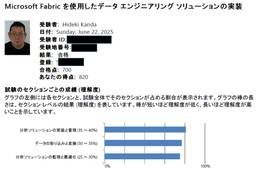
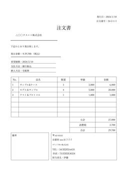

JBS Tech Blog
https://blog.jbs.co.jp/
JBS Tech Blogは、日本ビジネスシステムズ（JBS）の社員が分担して執筆を担当し、技術情報を発信しているブログです！Microsoft製品や生成AI関係の最新情報をはじめ、様々な製品やサービスの情報を幅広く公開しています。2022年3月より運用を開始し、毎営業日の1記事以上公開を継続中です！
フィード

【Microsoft×生成AI連載】【Microsoft Fabric】 Microsoft Fabricでデータエージェントを作ってみた
JBS Tech Blog
Microsoft Fabricは、データ分析・統合・AI活用を一元的に提供するクラウドベースの分析プラットフォームです。その中でも「データエージェント」は、自然言語での対話を通じてデータ探索や分析を支援するCopilot機能を備えています。 これにより、専門的なクエリ言語を知らなくても、質問するだけでデータからインサイトを得ることが可能になります。 本記事では、実際にデータエージェントを動かす流れと、その機能、ビジネスにもたらす変革を具体的に掘り下げます。 ※ なお、本記事は、Microsoft Fabricについて基礎的な知識を有している事を前提としています。 これまでの連載 データエージ…
2日前

Microsoft Certified: Fabric Data Engineer Associate(DP-700)合格記
JBS Tech Blog
本記事では、Microsoft Certified: Fabric Data Engineer Associate(DP-700)資格を受験する際のポイントについてご紹介します。 Microsoft Certified: Fabric Data Engineer Associate(DP-700)概要 概要 試験範囲 難易度 学習方法 参考教材 Microsoft DP-700 prep: Fabric Data Engineer Associate 問題集 DP 700-Microsoft Certified:Fabric Data Engineer Practice Set 学習時間 試験…
3日前
【Microsoft×生成AI連載】【PowerPoint】 Microsoft PowerPointのCopilotで入力ファイル形式によるスライド生成の違いを検証してみた
JBS Tech Blog
本記事では、Microsoft PowerPointのCopilotによるスライド生成機能について、対応するファイル形式ごとの違いを比較検証します。
4日前

Azure AI Content Understandingの文書分析(Document analysis)を使ってみた。
JBS Tech Blog
Azure AI Content Understandingは、生成AIを用いて文書・画像・音声・動画の情報を抽出し、構造化するサービスです。 Azure AI Content Understandingには、単一ファイルから情報を抽出する標準モードと、複数ファイルを横断してマルチステップ推論できるプロモードがあります。 本記事では、標準モードで単一ファイルの文書（注文書）から情報を抽出する文書分析(Document analysis)の方法を紹介します。*1 Azure AI Content Understandingとは 標準モードとプロモードについて 文書分析(Document anal…
5日前

Microsoft Agent Framework を利用し、MCPツールを利用するAIエージェントやマルチエージェントシステムを構築する
JBS Tech Blog
本記事では、Microsoft Agent Framework を利用して AI エージェントを作成する方法を紹介します。 Microsoft Agent Framework の概要 実行環境 環境変数の設定 MCPツールを利用するAIエージェントの構築 コード 実行結果 マルチエージェントのオーケストレーション コード 実行結果 最後に Microsoft Agent Framework の概要 Microsoft Agent Framework は、.NET および Python 用の AI エージェント と マルチエージェント ワークフロー を構築するためのオープンソース開発キットです。…
9日前
【Microsoft×生成AI連載】Copilot Studioで作成したエージェントをTeamsアプリストアに公開
JBS Tech Blog
Teamsアプリストアでエージェントを公開する手順をステップバイステップで解説。AIエージェントの迅速な導入と利用促進を実現します。
9日前
【Microsoft Ignite 2025】現地レポート Microsoft Igniteで体験できる項目
JBS Tech Blog
今回は、Microsoft Igniteで体験できる主な項目についてご紹介します。 Microsoft Igniteでは基調講演（キーノート）だけでなく、以下のような項目を体験することが可能です。 ハンズオン・ラボ ハブ（Hub） コミュニティ交流 セッション 認定試験・スキルアップ スポンサー体験 On Airプログラム ランチ & リフレッシュ 体験項目 ハンズオン・ラボ ハブ（Hub） コミュニティ交流 セッション 認定試験・スキルアップ スポンサー体験 On Airプログラム ランチ & リフレッシュ 会場ご飯1 会場ご飯2 まとめ 体験項目 ハンズオン・ラボ Microsoft Ig…
9日前
【Microsoft Ignite 2025】Security Copilot 注目ポイントを紹介
JBS Tech Blog
本記事では、2025年11月に開催された「Microsoft Ignite」で発表されたSecurity Copilotの最新情報と注目ポイントについて紹介します。
9日前
【Microsoft Ignite 2025】RAG&Tool Call&MCPでピザを注文するAgentを構築する
JBS Tech Blog
本記事では、ピザ店としてふるまうAgentを設計するLAB Sessionについて解説します。Microsoft Foundry（旧AI Foundry）を使用してプレーンなAgentを構築するところから、システムプロンプトの設定→RAGの追加→関数ツールの追加→MCPサーバーの接続と発展させていき、最終的にピザの品ぞろえや注文についての相談、そして注文をそのまま実行できるAgent（チャットボット）を構築します。
9日前
【Microsoft Ignite 2025】現地レポート 基調講演
JBS Tech Blog
Microsoft Igniteは、最新のITトレンドや革新的ソリューションを体験できる世界最大級のイベントです。 今回、サンフランシスコで開催されているMicrosoft Ignite 2025に参加しており、現地から基調講演の内容や会場の雰囲気をお届けします。 Microsoft Igniteとは？ 基調講演内容 Agent 365：業務を自律的に遂行するエージェント時代へ Work IQ：ユーザー“らしさ”を理解する知能レイヤー Azure Copilot & Agentic Cloud Ops セキュリティ・アイデンティティの進化 クラウド＆インフラ強化 会場の雰囲気 まとめ Micr…
9日前
【Power BI Desktop】グラフ金額単位を日本円で表示する方法
JBS Tech Blog
本記事では、Power BIのグラフにおいて金額を日本円で表示するための設定方法を詳しくご紹介します。
10日前
【Microsoft Ignite 2025】AI Search+Agentを使用してナレッジベースを構築する
JBS Tech Blog
AI Searchの新機能として、Agentを使用したナレッジベースが実装されました。このAgentはインデックス、OneLake、SharePoint、Bingから回答を生成でき、またコストを切り替えることで、精度を求めるか、速度やトークン数を抑えるかなど、ユーザーの要望に柔軟に対応するような機能が提供されます。こちらの内容について、セッションの詳細を最速でご紹介いたします。
10日前
【Microsoft×生成AI連載】【Microsoft 365 Copilot】チャット内での画像読み取り・生成機能を使ってみた
JBS Tech Blog
【Microsoft×生成AI連載】シリーズです！ 今回は、Microsoft 365 Copilot Chat（以下、Copilot Chat）で画像読み取りと画像生成ができるようになったので使ってみました。 これまでの連載 Microsoft 365 Copilot Chatでの画像機能の紹介 画像読み取り 画像生成 利用シーンとメリット、注意点 利用シーン メリット 注意点 まとめ おまけ（Copilot Chatによる本記事の要約） これまでの連載 これまでの連載記事一覧はこちらの記事にまとめておりますので、過去の連載を確認されたい方はこちらの記事をご参照ください。 blog.jbs.…
11日前
Microsoft FabricでVNetデータゲートウェイを活用し、Azureストレージアカウントのデータを取得する方法
JBS Tech Blog
Microsoft Fabricは、Power BI、Data Factory、Synapseなどの機能を統合した新しい分析プラットフォームです。 企業内でのデータ活用において、セキュリティを確保しながらクラウド上のデータソースにアクセスすることは非常に重要です。 Microsoft Fabricでは、セキュリティ確保のための手段の一つとして、FabricのVNetデータゲートウェイを利用して、Azureストレージアカウント（Blob Storage）から安全にデータを取得する事が可能です。 本記事では、VNet制限されたストレージに対してFabricから直接アクセスする構成を紹介し、実際の手…
12日前
Cisco Live 2025 Melbourne 現地レポート 統括（Day4）
JBS Tech Blog
オーストラリア・メルボルンからCisco Live 2025の模様をレポート。AIとクラウドを基盤としたインフラ戦略をはじめ、3日間のイベントを総括。
16日前
【Microsoft×生成AI連載】【Teams】ファシリテーターエージェントのご紹介
JBS Tech Blog
今回は、Microsoft Teamsで「ファシリテータエージェント」について紹介します。この機能は、会議の進行をスムーズにし、議題管理や発言の公平性を確保するために設計されています。主催者の負担を減らし、参加者全員がより生産的なディスカッションに集中できるのが最大の特徴になります。
16日前
Cisco Live 2025 Melbourne 現地レポート Day3
JBS Tech Blog
Cisco Live 2025メルボルンでのテクノロジーの最前線を現地リポート！AI対応データセンターからセキュリティソリューションまで、3日目の主要セッションをお届けします。
17日前
Cisco Live 2025 Melbourne 現地レポート Day2
JBS Tech Blog
現在、Cisco Live 2025 Melbourneの現地からレポートをお届けしています。イベントの様子や注目ポイントを随時ブログで発信していきます。
18日前
【Microsoft×生成AI連載】 ExcelのAgent mode使ってみた
JBS Tech Blog
【Microsoft×生成AI連載】シリーズの記事です。 本記事では「Microsoft Excel」(以下、Excel)で利用できるAgent modeについて紹介します。 これまでの連載 Agent modeの紹介 Agent modeの使用方法 Agent modeの追加 Agent modeを使ってみる 生成機能 分析機能 エラー検出・修正機能 利用シーンとメリット 利用シーン メリット 注意点 まとめ おまけ(Copilot Chatによる本記事の要約) これまでの連載 これまでの連載記事一覧はこちらの記事にまとめておりますので、過去の連載を確認されたい方はこちらの記載をご参照くださ…
18日前
Cisco Live 2025 Melbourne 現地レポート Day1
JBS Tech Blog
現在、Cisco Live 2025 Melbourneの現地からレポートをお届けしています。イベントの様子や注目ポイントを随時ブログで発信していきます。
19日前
SUSE Linux Enterprise 15 SP6 のインストールと初期設定
JBS Tech Blog
SUSE Linux （以降、SUSE）は、ヨーロッパでは古くから人気の高かった商用の Linux ディストリビューションです。本記事では、インストールから基本的な初期設定までの流れをシンプルにまとめます。これから SUSE を使い始める方や、検証環境をすぐに立ち上げたい方の参考になれば幸いです。
20日前
【Microsoft×生成AI連載】【Agents】Microsoft Copilot Studioのコードインタープリター機能を使ってみた
JBS Tech Blog
【Microsoft×生成AI連載】寺澤です。今回は、Microsoft Copilot Studioでコードインタープリター機能を試してみました。 本記事では、Excelファイルを読み取って、ExcelファイルとPDFファイルの出力をします。 ※ この記事の情報は2025/10/30時点のものです。 これまでの連載 コードインタープリターの概要 前提条件 機能 実装 PowerPlatform管理センターでコードインタープリターを有効にする プロンプトでコードインタープリターを実装 エージェントの指示で実装 利用シーンとメリット、注意点 利用シーン メリット 注意点 まとめ おまけ(Copi…
23日前
Snowflake未経験エンジニアがSnowflake Notebooksを触ってみた
JBS Tech Blog
Snowflakeを扱うチームに所属することになり、初めてSnowflakeを触ったのでその所感を記事にまとめてみました。 はじめに Snowflake Notebooksの特徴 実践編 ノートブックの作成 プログラムの実行 セル単位での実行 プログラム全体の実行 気になったこと SQLからPythonへ出力結果が渡される仕組み グラフ化できる仕組み まとめ はじめに Snowflakeとは、データの格納・処理・分析を実現するSaaS型のクラウドデータプラットフォームです。従量課金制と柔軟な拡張性が特長で、使いやすさにも定評があります。 本記事では、興味を惹かれたNotebooks機能について…
24日前
【Microsoft×生成AI連載】【Power Platform】Microsoft Power PagesでMicrosoft Copilotを使ってみた
JBS Tech Blog
Microsoft Power Pagesで利用できるCopilot機能についてご紹介します
25日前
ファイルサーバーのデータをCopilotで活用する方法
JBS Tech Blog
Microsoft 365 Copilotでオンプレミスファイルサーバーのデータを活用する方法を解説。ファイルサーバー上のドキュメントやマニュアルを自然言語で検索・要約可能に。前提条件、構成、導入手順を詳しく紹介し、業務効率化と情報活用を加速させる。
1ヶ月前
【Microsoft×生成AI連載】SharePointナレッジエージェント機能紹介
JBS Tech Blog
【Microsoft×生成AI連載】久保田です。今回はMicrosoft SharePointナレッジエージェント(以下、SharePointエージェント)の機能を紹介していきます。 ※この記事の情報は2025/10/22時点のものです。 Microsoft 365 CopilotやMicrosoft SharePointなどに興味がある方、普段から利用されている方など様々な方に読んでいただきたい記事となっておりますので、ぜひご覧ください。 これまでの連載 SharePointナレッジエージェントの概要 SharePointナレッジエージェントでメタデータ化が必要な理由 AIが情報を理解しやす…
1ヶ月前
Fabric容量で CU 消費率に応じてアラートを発報する方法
JBS Tech Blog
Microsoft Fabric Premium 容量でCU消費率が80％に達した際にアラートを設定する方法を解説します。管理ポータルでの通知設定手順や前提条件、構成ポイントを詳しく紹介し、容量の安定運用とリソース不足の防止に役立つ実践的なガイドです。
1ヶ月前
【Microsoft×生成AI連載】Skillsエージェントにより組織のスキル検索が便利に
JBS Tech Blog
シーズン4を迎えたMicrosoft×生成AI連載では、SkillsエージェントとPeople Skillsを紹介。組織内のスキル管理やエキスパート探索に向けた新たなAI機能を詳解します。
1ヶ月前
Azure Functions × Semantic Kernelで複数エージェントの回答をストリーミング配信するエンドポイントの実装
JBS Tech Blog
先日、Semantic Kernelを使って、複数エージェントからの回答をストリーミングで返す方法を試してみました。今回は、Azure Functions でエンドポイントを実装し、エージェントの回答をストリーミングで送信する方法を紹介します。 実装環境 Azure Functionsの準備 実装 Azure Functions の処理の流れ コード 動作画面 クライアント側のコード(Blazor WASM) 最後に 参考 実装環境 semantic-kernel 1.37.0 Python 3.12 Azure Functionsの準備 今回は、Azure FunctionsをPythonで…
1ヶ月前